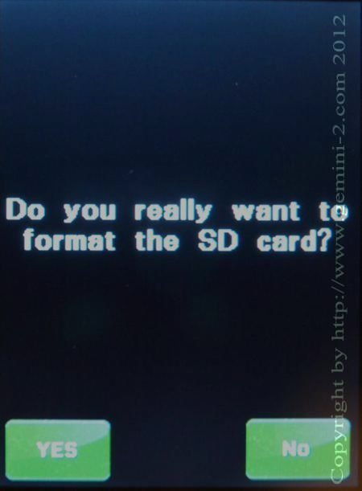

| Interactive Hand-Controller Menus - click on green button to Navigate |
|  |
Format Yes? No? If you press YES, the micro-SDcard in the hand controller will be formatted, and the directory structure will be put back. However all files will be erased! You can restore the catalogs by putting them in the Firmware directory of the micro-SDcard in the main Gemini-2 unit. You can also put the GemLogo.b16 file in the same directory, and it will also be uploaded to the correct location. You would then use the Upload Files command from the SD card menu, to cause all the files in the Firmware directory to be uploaded to the hand controller. NOTE: the upload Files button does not upload the programing file gemhc.bin to the hand controller. That is only done when the hand controller is powered up, either by turning the complete Gemini-2 unit off and on, or unplugging and re-plugging the hand controller when power is applied to the main Gemini-2 unit. |